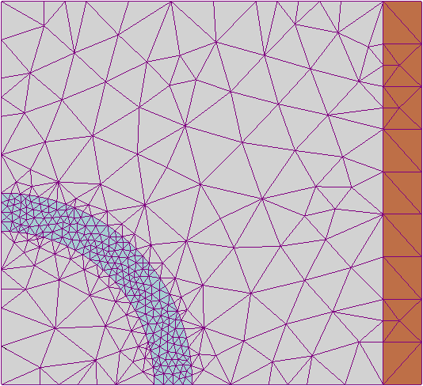
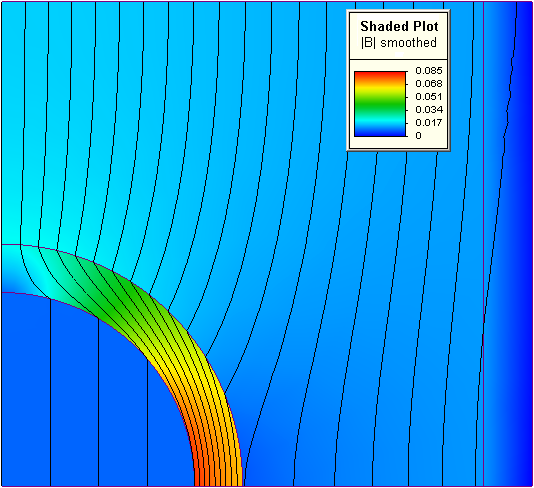
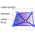

<!doctype html>
<html lang="fr">

    <head>
        <meta charset="utf-8">

        <title>pres.md</title>

        <meta name="author" content="Oslandia">

        <meta name="apple-mobile-web-app-capable" content="yes" />
        <meta name="apple-mobile-web-app-status-bar-style" content="black-translucent" />

        <meta name="viewport" content="width=device-width, initial-scale=1.0, maximum-scale=1.0, user-scalable=no">

        <link rel="stylesheet" href="static/reveal.js/css/reveal.css">
        <link rel="stylesheet" href="static/reveal.js/css/theme/moon.css" id="theme">

        <!-- For syntax highlighting -->
        <link rel="stylesheet" href="static/reveal.js/lib/css/zenburn.css">

        <!-- Oslandia customizations -->
        <link rel="stylesheet" href="static/oslandia.css">

        <!-- If the query includes 'print-pdf', include the PDF print sheet -->
        <script>
            if( window.location.search.match( /print-pdf/gi ) ) {
                var link = document.createElement( 'link' );
                link.rel = 'stylesheet';
                link.type = 'text/css';
                link.href = "static/reveal.js/css/print/pdf.css";
                document.getElementsByTagName( 'head' )[0].appendChild( link );
            }
        </script>

        <!--[if lt IE 9]>
        <script src="lib/js/html5shiv.js"></script>
        <![endif]-->
    </head>

    <body>

        <div class="reveal" >
        <div class="slides">
            <section data-markdown data-separator="^\n---\n$" data-vertical="^\n--\n$">
                <script type="text/template">
                    ## Bridging the gap between simulation and GIS

*Oslandia*

Original idea: Vincent Mora

Speaker: Hugo Mercier

Geospatial room, FOSDEM 2015

<!-- .slide: data-background="oslbackground.png" data-background-size="650px" -->


Note:
La fenêtre du speaker peut être ouverte avec la touche 's'
Pour noircir la fenêtre, presser 'b'

---

## Outline

- Simulation 101
- Open source tools for simulation and GIS
- What are we now ?
- What is missing. What are we focusing on ?

---

## Simulation 101

- You have some "dynamic" model of a physical law

  - Usually modeled by differential equations
  - Depending on time and or space

- You want to "solve" it on a particular domain

  - Analytical solutions cannot be used (do not exist or too hard)

- Cut-down the global problem into small simpler problems

  - On smaller subdomains
  - => **Finite elements**

---

## Simulation 101

Example: magnetic field problem



---

## Simulation 101

- Mesh to partition space
- Values (scalar or vector) attached to each "node"
- Each node has a specific connectivity (neighborhood)
- Each "triangle" or **finite element** is used to interpolate values
- Can be 1D, 2D, 3D (or more)

---

## Vector field



---

## Simulation questions

- How to discretize space ?
- How to interpolate values ?
- How to assemble local solutions ?
- Which parameters for the model ?

---

## Focus

- Simulation of GIS data

  - weather forecast
  - air quality
  - water quality
  - eathquakes
  - ...

- Meshes with georeferenced data !

---

## Open source simulation

Lots of engines or models !

- MM5 (weather forecast)
- Polyphemus (air quality)
- SWMM (stormwater)
- EPANET (drinking water)
- WASP (wind speed)
- MESO-NH (air quality?)
- OpenSees (earthquake)
- open TELEMAC-MASCARET (tidal flow)
- ...

---

## Open source simulation

More generic :

- Code_Aster
- Code_Saturne
- OpenFOAM
- CAST3M
- Kratos ?
- Simulagora
- Paraview ?

---

## Simulation and GIS

- Lack of connection between the two worlds !
- What we did: integration of EPANET into QGIS
- Why QGIS ?

  - Generic
  - Mature
  - Extensible (plugins)
  - Powerful (processing toolbox)
    - 3D is coming
  - Open Source

=> **Let's turn QGIS into a simulation platform !**

---

## QGIS-Epanet

https://vimeo.com/87754967

---

## QGIS-Epanet

You can :

- run the simulation
- tune simulation parameters
- visualize results
- **make the link with other GIS data and processings**

---

## The ambition

Let's continue to bridge the gap. <!-- .element: class="fragment" data-fragment-index="1" -->

What about ... <!-- .element: class="fragment" data-fragment-index="2" -->

---

## A NEW MESH CONCEPT !

 <!-- .element: class="fragment" data-fragment-index="2" -->

---

## Vector field requirements

Something suitable for both simulation and GIS

- Arbitrary values on nodes
- 1D, 2D or 3D
- Topological constraints (!= polygon soup)
- Interpolation functions
- Simple and efficient format
- Seen as GIS layers when needed (spatial analysis)
- Seen as a simulation mesh when needed

---

## GIS concepts

- vector layers
  - a database table + a geometry column
  - point, line, polygon
- raster layers
  - a regular grid of data (images)

---

## Vector field in GIS concepts

- nodes = point layer with attributes
- elements
  - polygon / TIN / polyhedral surface layer
  - **with topological constraints**
- interpolation functions :
  - metadata table or attribute in elements
- export (static)
  - raster layers

---

<!-- .slide: data-background="architecture.svg" data-background-size="750px" -->

---

## API: Simulation model

- Simulation parameters
- Name, type, definition range
- Widgets generation
- => **QGIS simulation toolbox** (*à la* Processing)

---

## Visualization / Editing

- Editing
  - Work with nodes as points and elements as polygons
  - Do spatial analysis
- Visualization of results
  - Animation
  - OpenGL (?)

---

## API: Simulation execution

- Communication with the simulation engine
- **Protocol**
- WPS (?)

---

## Existing related concepts

- PostGIS / Spatialite topology

  - A generic graph
  - Not a continuous field

- Crayfish plugin

  - A vector field implemented with QGIS
  - Too specific to a particular engine

---

<!-- .slide: data-background="qgis_crayfish.jpg" data-background-size="750px" -->

## Crayfish plugin <!-- .element: style="color:#a00" -->

- QGIS plugin by Lutra Consulting <!-- .element: style="color:#a00" class="fragment" data-fragment-index="2" -->
- PluginLayer to display results <!-- .element: style="color:#a00" class="fragment" data-fragment-index="3" -->
- Specific to TUFLOW formats <!-- .element: style="color:#a00" class="fragment" data-fragment-index="4" -->

---

## Toward an open source solution

- store, edit and visualize vector fields for simulation
- communicate with simulation engines

Can be used to:

- use existing models and engines
- develop new ones

---

## Conclusion

- Lots of potential with simulation models / engines
- Lacks a better integration with the open GIS stack
- Let's start with the concept of vector field
  - We are already working on it ...
- Stay in touch !

contact@oslandia.com


                </script>
            </section>
        </div>
        <script src="static/reveal.js/lib/js/head.min.js"></script>
        <script src="static/reveal.js/js/reveal.js"></script>

        <script>

            // Full list of configuration options available here:
            // https://github.com/hakimel/reveal.js#configuration
            Reveal.initialize({
                controls: false,
                progress: true,
                history: true,
                center: true,
                mouseWheel: false,
                theme: Reveal.getQueryHash().theme, // available themes are in /css/theme
                transition: 'linear', // default/cube/page/concave/zoom/linear/fade/none

                // Optional libraries used to extend on reveal.js
                dependencies: [
                    { src: "static/reveal.js/lib/js/classList.js", condition: function() { return !document.body.classList; } },
                    { src: "static/reveal.js/plugin/markdown/marked.js", condition: function() { return !!document.querySelector( '[data-markdown]' ); } },
                    { src: "static/reveal.js/plugin/markdown/markdown.js", condition: function() { return !!document.querySelector( '[data-markdown]' ); } },
                    { src: "static/reveal.js/plugin/highlight/highlight.js", async: true, callback: function() { hljs.initHighlightingOnLoad(); } },
                    { src: "static/reveal.js/plugin/zoom-js/zoom.js", async: true, condition: function() { return !!document.body.classList; } },
                    { src: "static/reveal.js/plugin/notes/notes.js", async: true, condition: function() { return !!document.body.classList; } }
                ]
            });

        </script>

    </body>
</html>